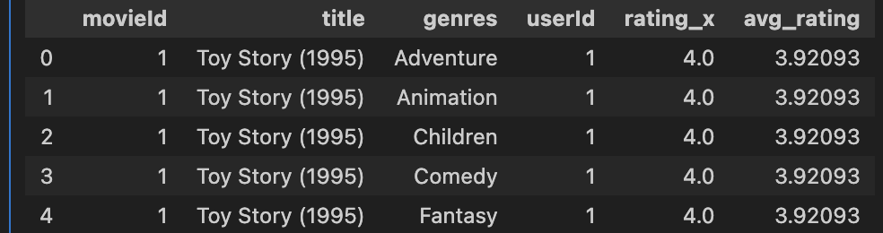
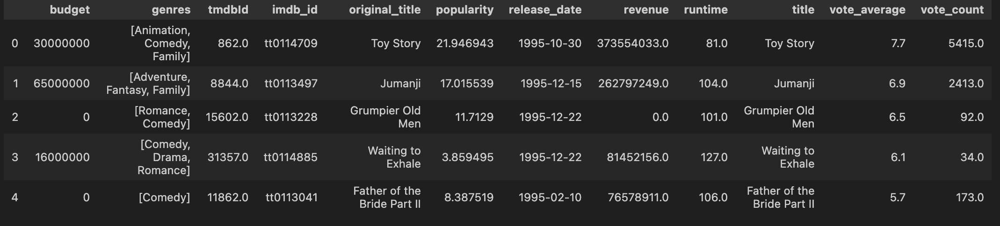

Data cleaning is pertinent to analyzing the datasets at hand. For this task, we will clean the data acquired from GroupLens and Kaggle to remove unnecessary and noisy features with the objective of condensing the information for further analysis.
User Movie Ratings Dataset
Code
import pandas as pdimport numpy as npimport os# Change to the directory where your file is locatedos.chdir('/Users/samanthamoon/Desktop/DSAN 5000/dsan-5000-project-samjmoon/dsan-website/5000-website/data-cleaning')movies_df = pd.read_csv('movies.csv')ratings_df = pd.read_csv('ratings.csv')print(movies_df.head())print(ratings_df.head())
movieId title \
0 1 Toy Story (1995)
1 2 Jumanji (1995)
2 3 Grumpier Old Men (1995)
3 4 Waiting to Exhale (1995)
4 5 Father of the Bride Part II (1995)
genres
0 Adventure|Animation|Children|Comedy|Fantasy
1 Adventure|Children|Fantasy
2 Comedy|Romance
3 Comedy|Drama|Romance
4 Comedy
userId movieId rating timestamp
0 1 1 4.0 964982703
1 1 3 4.0 964981247
2 1 6 4.0 964982224
3 1 47 5.0 964983815
4 1 50 5.0 964982931
We started with two datasets, one containing movie data (movieId, title, genres), and another containing ratings data (userId, movieId, rating, timestamp). I merged these two datasets together and computed the average rating per movie in a new column (avg_rating). For EDA purposes, I melted the genres column so that each row includes no more than one genre tag.

I condensed this dataframe further by removing columns genres, userId, and rating. I will use this in further analysis to combine with the metadata set.
import pandas as pdimport numpy as npfrom ast import literal_evalimport osos.chdir('/Users/samanthamoon/Desktop/DSAN 5000/dsan-5000-project-samjmoon/dsan-website/5000-website/data-cleaning')metadata_df = pd.read_csv('movies_metadata.csv')metadata_df['genres'] = metadata_df['genres'].apply(lambda x: [genre['name'] for genre in literal_eval(x)] ifisinstance(x, str) else [])metadata_df.head()
/var/folders/mm/79b3ggcn52x9kcrnqfx5mtk40000gn/T/ipykernel_11888/974123927.py:6: DtypeWarning: Columns (10) have mixed types. Specify dtype option on import or set low_memory=False.
metadata_df = pd.read_csv('movies_metadata.csv')
adult
belongs_to_collection
budget
genres
homepage
id
imdb_id
original_language
original_title
overview
...
release_date
revenue
runtime
spoken_languages
status
tagline
title
video
vote_average
vote_count
0
False
{'id': 10194, 'name': 'Toy Story Collection', ...
30000000
[Animation, Comedy, Family]
http://toystory.disney.com/toy-story
862
tt0114709
en
Toy Story
Led by Woody, Andy's toys live happily in his ...
...
1995-10-30
373554033.0
81.0
[{'iso_639_1': 'en', 'name': 'English'}]
Released
NaN
Toy Story
False
7.7
5415.0
1
False
NaN
65000000
[Adventure, Fantasy, Family]
NaN
8844
tt0113497
en
Jumanji
When siblings Judy and Peter discover an encha...
...
1995-12-15
262797249.0
104.0
[{'iso_639_1': 'en', 'name': 'English'}, {'iso...
Released
Roll the dice and unleash the excitement!
Jumanji
False
6.9
2413.0
2
False
{'id': 119050, 'name': 'Grumpy Old Men Collect...
0
[Romance, Comedy]
NaN
15602
tt0113228
en
Grumpier Old Men
A family wedding reignites the ancient feud be...
...
1995-12-22
0.0
101.0
[{'iso_639_1': 'en', 'name': 'English'}]
Released
Still Yelling. Still Fighting. Still Ready for...
Grumpier Old Men
False
6.5
92.0
3
False
NaN
16000000
[Comedy, Drama, Romance]
NaN
31357
tt0114885
en
Waiting to Exhale
Cheated on, mistreated and stepped on, the wom...
...
1995-12-22
81452156.0
127.0
[{'iso_639_1': 'en', 'name': 'English'}]
Released
Friends are the people who let you be yourself...
Waiting to Exhale
False
6.1
34.0
4
False
{'id': 96871, 'name': 'Father of the Bride Col...
0
[Comedy]
NaN
11862
tt0113041
en
Father of the Bride Part II
Just when George Banks has recovered from his ...
...
1995-02-10
76578911.0
106.0
[{'iso_639_1': 'en', 'name': 'English'}]
Released
Just When His World Is Back To Normal... He's ...
Father of the Bride Part II
False
5.7
173.0
5 rows × 24 columns
This dataset contains 24 columns, so we want to reduce it and get rid of unnecessary information. I deleted irrelevent columns and ensured that no NaN values remained. Here is a look at the cleaned dataframe:

We will use this cleaned dataset in combination with the cleaned average rating dataset for later analysis.